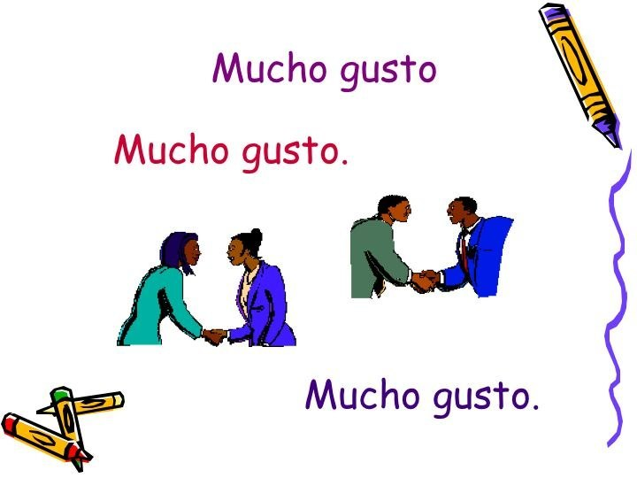
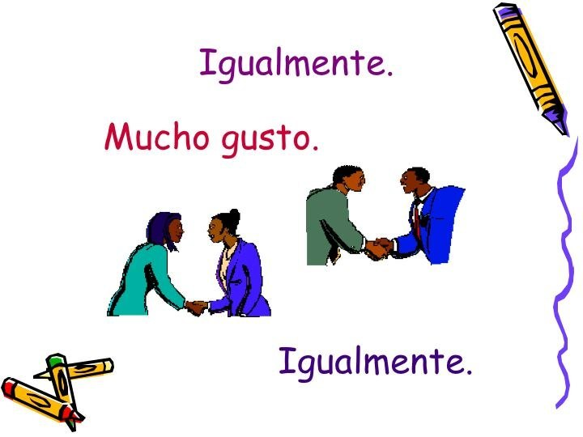
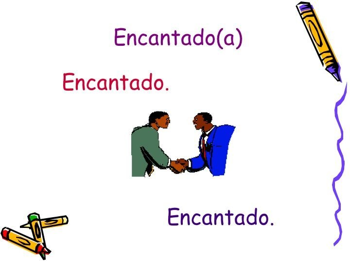
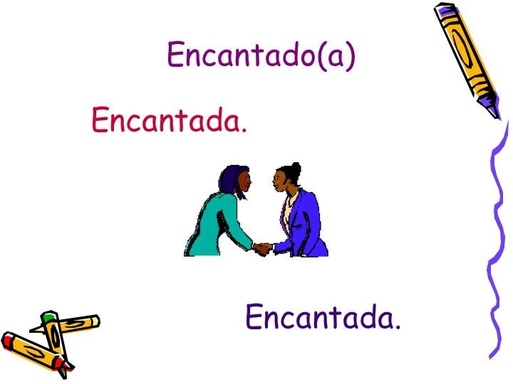
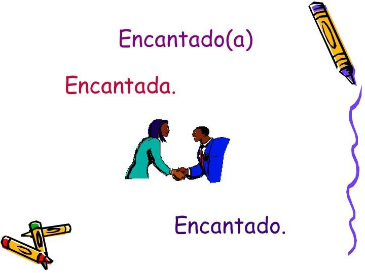

← ¿Cómo se dice?に戻る
よろしく
/ Mucho gusto

Mucho gusto
「よろしく（お願いします）」の最も一般的な言い方
🔊 クリックで発音

Igualmente
「同様です」＝「こちらこそ」
igual = equal / igualmente = equally
🔊 クリックで発音

Encantado
「（知り合えて）嬉しい」
形容詞で言っている人の性に合わせる。-o で終わる男性形。
🔊 クリックで発音

Encantada
女性形。-a で終わる。
🔊 クリックで発音

Encantado/a
「嬉しいです」と言う人の性に合わせる。間違えないように。
🔊 クリックで発音